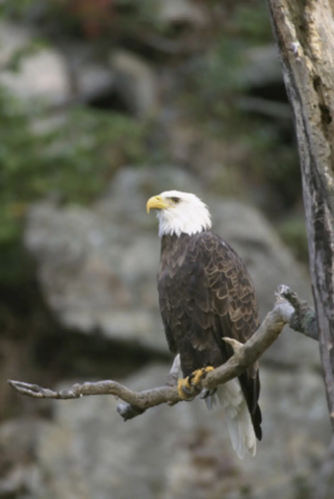
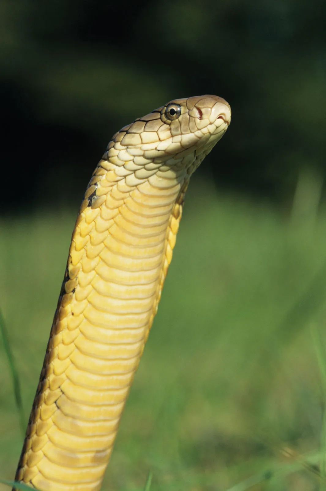
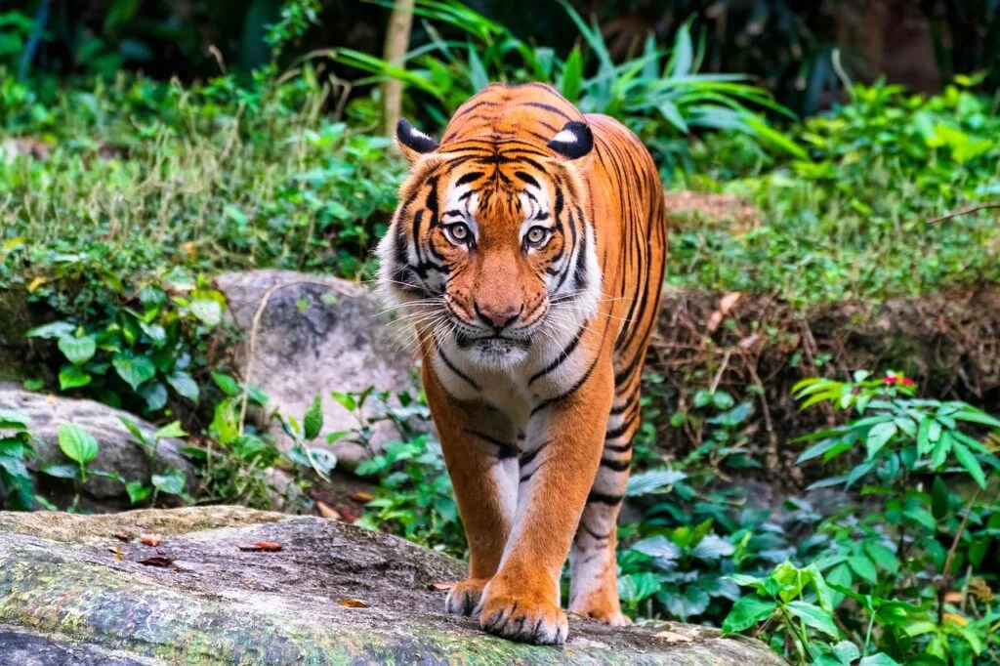

Bald Eagle
Heliaeetus leucocephalus
The Bald Eagle is of least concern. An adult Bald Eagle is between 3-6.5kg and can have a wingspan of 2.6m. - See more.

The Bald Eagle is of least concern. An adult Bald Eagle is between 3-6.5kg and can have a wingspan of 2.6m. - See more.

The King Cobra is considered a 'vulnerable' species and its population is in decline due to persecution and killings by humans... - See more.
Eurasian Eagle Owls are 60-70cm with a wingspan of 1.6-1.8m and weigh around 15-30kg. They possess dark orange eyes and 'ear tufts'... - See more.

The Malayan Tiger only lives in Malaysia and in small pockets around Malaysia. Their habitats include abandoned agricultural land, small forests, and secondary vegetation... - See more.